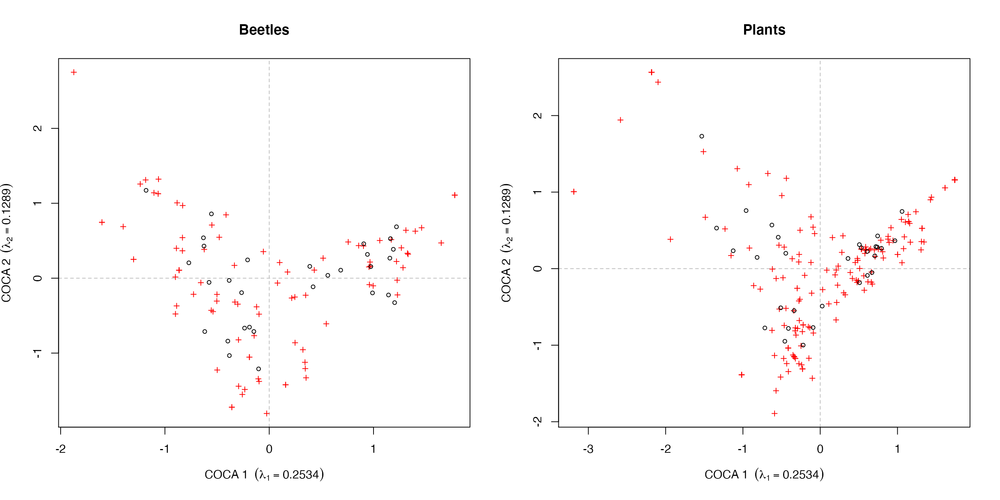

vignettes/cocorresp-intro.Rmd
cocorresp-intro.RmdAmong the ordination methods available to ecologists there are methods that relate a species abundance or occurrence matrix to a matrix of explanatory variables. Known as constrained or canonical ordination methods, redundancy analysis (RDA) and Canonical Correspondence Analysis (CCA) are the most commonly encountered forms. A restriction of these methods is that they are only constrained if there are fewer explanatory variables as numbers of observations or species, whichever is lowest, - 1.
Relating two species matrices is not possible using RDA or CCA unless the number of species in the data set playing the explanatory role is much smaller than the number of observations. Co-inertia analysis was invented as a solution to problems of this sort, but a deficiency is that it has an underlying linear response model like RDA.
Co-correspondence analysis (Co-CA) combines the ideas of co-inertia analysis with the unimodal response model familiar to correspondence analysis (CA) or CCA methods. The aim is to related two species abundance or occurrence matrices such that the resulting decomposition into axes are those combinations that best explain the covariation between species and observations in the two matrices.
There are two forms of Co-CA;
In symmetric Co-CA, neither of the two abundance or occurrence matrices plays the predictive or explanatory role. This method is best thought of as identifying the common patterns between the two assemblages. In contrast, in predictive Co-CA a more direct regression model is fitted where one matrix plays the response role and the other the predictor role. In this way, one set of species data is used to predict the other.
The key requirement for Co-CA is that the two assemblages have been collected at the same locations, just as you would if you wanted to explain species abundance as a function of environmental factors.
As an illustration of symmetric Co-CA, we look at common patterns in a data set of beetles and plants. The data are provided with cocorresp
The data are observations of beetle and vascular plant species abundance at 30 roadside verges in the Netherlands. There are 126 beetle taxa and 231 vascular plant species. The abundances of the vascular plants are recorded on the 1–9 van der Maarel scale. To make the distributions of beetle species abundances more symmetric and stabilise variances, the counts are log transformed.
Both forms of Co-CA are fitted using the coca() function. The call comprises
.,data argument supplied a suitable data frame or matrix. This is the object used to form the terms on the right-hand side of the formula indicated by the . placeholder,method argument; options are "symmetric" and "predictive".A symmetric Co-CA is fitted to the beetle and plant data sets as follows
bp.sym <- coca(beetles ~ ., data = plants, method = "symmetric")
##
## Removed some species that contained no data in: beetles, plantsNotice that it shouldn’t make any difference which of the matrices is specified on the right- or left-hand sides of the formula. The messages printing during fitting are for information; some species contained no data and hence were removed prior to fitting. This data processing step could have been performed ahead of time via
beetles <- beetles[, colSums(beetles) > 0] plants <- plants[, colSums(plants) > 0] bp.sym <- coca(beetles ~ ., data = plants, method = "symmetric")
Printing the resulting object provides a relatively compact summary of the Co-CA model fitted
bp.sym##
## Symmetric Co-Correspondence Analysis
##
## Call: symcoca(y = y, x = x, n.axes = n.axes, R0 = weights, symmetric =
## symmetric, nam.dat = nam.dat)
##
## Inertia:
## Total Explained Residual
## beetles: 3.988 3.971 0.018
## plants: 5.757 5.740 0.018A screeplot provides a graphical summary of the dimensionality of the covariance between the two matrices.
screeplot(bp.sym)
From the screeplot, we see that most of the signal in the covariance is contained on the first 2–3 axes.
The resulting symmetric co-correspondence analysis can be plotted in the form of a biplot, except now we have two sets of species (variable) scores and two sets of site (observations or sample) scores. The biplot method can be used to draw Co-CA biplots. The which argument selects which of the two assemblages are drawn:
"y1" indicates the species assemblage on the left-hand side of the formula,"y2" indicates the species assemblage on the right-hand side of the formula.layout(matrix(1:2, ncol = 2)) biplot(bp.sym, which = "y1", main = "Beetles") biplot(bp.sym, which = "y2", main = "Plants") layout(1)

Some additional control is afforded by the plot() method, but good plots of the fitted Co-CA will often require the use of lower-level functions such as the points() and scores() methods, as well as using appropriate sets of scores or loadings.